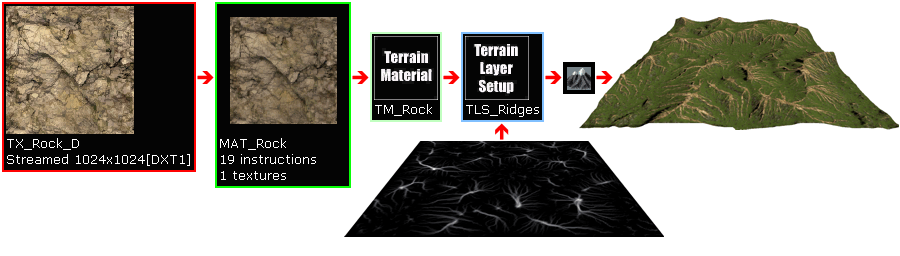
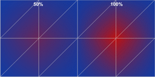
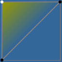
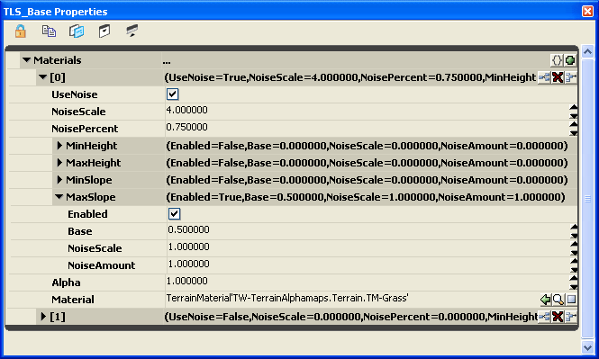
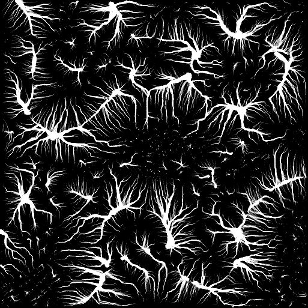
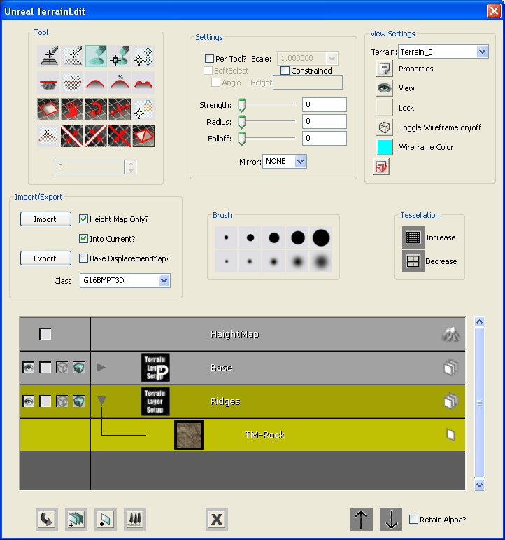
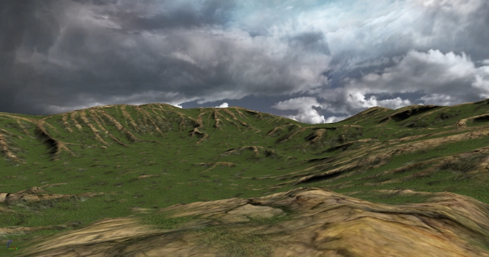

UDN
Search public documentation:
TerrainAlphamapsCH
English Translation
日本語訳
한국어
Interested in the Unreal Engine?
Visit the Unreal Technology site.
Looking for jobs and company info?
Check out the Epic games site.
Questions about support via UDN?
Contact the UDN Staff
日本語訳
한국어
Interested in the Unreal Engine?
Visit the Unreal Technology site.
Looking for jobs and company info?
Check out the Epic games site.
Questions about support via UDN?
Contact the UDN Staff
地形Apha贴图: 使用外部创建的贴图层alpha贴图
概述
Alpha贴图概述

每个alpha贴图像素值决定了应用到地形上的等价顶点的贴图的透明度混合百分比。由于这个原因，alpha贴图必须和高度图的分辨率一样，从而可以提供一个相应的1-对-1的混合值。 只要引擎渲染地形三角形，它便会从层的alpha贴图的行和列中获取每个高度图顶点上的每个贴图的混合值。 如果alpha贴图的值为0(黑色)将会导致在那个顶点没有贴图进行混合，值为127(灰色)将会导致50%的贴图在那个顶点进行混合，值为255(白色)将会导致100%的贴图在那个顶点进行混合。
发生在地形网格物体顶点间的贴图混合是线性渐变的而不是急剧的变化。换句话说，贴图层按照一个顶点到一个顶点的方式平滑地和它下面的贴图进行混合。正如在这个示例图片所示，它只是一个单独的地形三角形对(一个四方形)，左上角的地形顶点具有对应的全白色lapha贴图值(255)，而其它两个三角形顶点具有相应的全黑色的lapha贴图值(0)。然后贴图层将在地形三角形的表面按照一个坡度的方式从一个顶点到一个顶点平滑地进行混合。在这个实例中，底下的贴图是蓝色，而层上分配的贴图是黄色，所以白色alpha贴图值渲染为100%的黄色，而黑色的lapha贴图值渲染为100%的蓝色。三角形的表面总是显示为从黄色到蓝色的平滑渐变。
在虚幻引擎3的地形系统中，高度图或alpha贴图在通用浏览器?中是不可见。这和以前的引擎版本是不同的。地形层设置

注意当在一个TerrainLayerSetup中存在多项时，它们按照向上的顺序进行层放置，而贴图层从底(最高的元素索引值)向高(最低的元素索引[0])进行渲染。在上面的实例TerrainLayerSetup中，元素[0]在元素[1]的上面进行渲染。 尽管程序上控制的TerrainLayerSetup可以很容易地为您的地形提供平原(通过高度)、悬崖面(通过坡度)以及冰雪覆盖的山脉(通过高度)等层风格，但是它不能创建更加复杂的地理贴图层，比如山脉的山脊或河流阻隔。它也不能创建那些具有盘旋的河流和路的贴图层，因为那时在它的整个过程中地形系统的高度和坡度是变化的。对于那些更加复杂的贴图层，您可以选择或者手动地在UnrealEd中描画那个层或者使用一个从外部创建的alpha贴图文件。 注意要想手动地描画一个贴图层，或者导入一个外部alpha贴图文件到一个层中时，TerrainLayerSetup 必须是一个单独层的风格，它不能是程序化的多图层风格。 山脉的山脊(技术上有树枝形的山脊和地形学上的山脊)是指从风化的山脉中暴露出的没有被侵蚀的硬的岩石。Fluvial cuts(河流阻隔)是由水流过腐蚀物导致的，就像从山脉上流下的河流那样。 在这个指南中我们将使用的示例地形alpha贴图将展示贴图化的山脊地理类型。创建外部Alpha贴图
外部Alpha贴图的格式
使用外部Alpha贴图的地形实例
 自定义的”山脊”的alpha贴图是和高度图一同通过算法创建的，保存为Raw-16格式，然后转换为16-位灰度化TIF，从而可以在绘图软件中进行修改。这里是原始的Raw-16格式的alpha贴图：
自定义的”山脊”的alpha贴图是和高度图一同通过算法创建的，保存为Raw-16格式，然后转换为16-位灰度化TIF，从而可以在绘图软件中进行修改。这里是原始的Raw-16格式的alpha贴图：
 在绘图软件中修改TIF-16格式的alpha贴图，通过在多个渲染遍数中组合地使用Intensity(密度)和Contrast(对比度)来增加亮度的弯曲级别，然后再把它保存回TIF-16格式，再次把转换为G16 -16格式，以便把它导入到UnrealEd中。UE3中的UnrealEd相对于以前的虚幻引擎版本来说要求较高的对比度，所以这里的alpha贴图通常比那些在虚幻引擎2及2.5版本中创建的alpha贴图要具有更高的密度。
最终的TIF-16如下所示：
在绘图软件中修改TIF-16格式的alpha贴图，通过在多个渲染遍数中组合地使用Intensity(密度)和Contrast(对比度)来增加亮度的弯曲级别，然后再把它保存回TIF-16格式，再次把转换为G16 -16格式，以便把它导入到UnrealEd中。UE3中的UnrealEd相对于以前的虚幻引擎版本来说要求较高的对比度，所以这里的alpha贴图通常比那些在虚幻引擎2及2.5版本中创建的alpha贴图要具有更高的密度。
最终的TIF-16如下所示：

使用外部Alpha贴图创建示例地形
 8. 跳转到Terrain Edit(地形编辑)模式，打开地形编辑对话框。在Import/Export(导入/导出)组中，选中"Height Map Only(仅高度图)" 和 "Into Current(导入到当前图层)"复选框，以便它被导入到选中的图层中，在Class(类别)的下拉列表组合框中选择"G16BMPT3D"，因为我们导入的是G16 .bmp，选择山脊的TerrainLayerSetup，用于接收那个自定义alpha贴图(正如对话框上黄色的选择颜色所示)，然后选择Import(导入)按钮。在文件对话框中定位外部G16 alpha贴图文件并打开它。如果alpha贴图文件没有问题，比如不正确的文件格式或文件尺寸，那么alpha贴图将会被加载到地形设置中并应用到选中的层上。您或许需要点击"Recache Terrain Materials(重新缓存地形材质)"按钮来在视口中更新地形。注意，在这个实例中， Base(基础) 的TerrainLayerSetup是一个多层的程序上的设置，它包括泥土和草，正如在它的图标上的大"P"所显示的，并且alpha贴图要导入的 Ridges (山脊) 的TerrainLayerSetup位于它的下面。
8. 跳转到Terrain Edit(地形编辑)模式，打开地形编辑对话框。在Import/Export(导入/导出)组中，选中"Height Map Only(仅高度图)" 和 "Into Current(导入到当前图层)"复选框，以便它被导入到选中的图层中，在Class(类别)的下拉列表组合框中选择"G16BMPT3D"，因为我们导入的是G16 .bmp，选择山脊的TerrainLayerSetup，用于接收那个自定义alpha贴图(正如对话框上黄色的选择颜色所示)，然后选择Import(导入)按钮。在文件对话框中定位外部G16 alpha贴图文件并打开它。如果alpha贴图文件没有问题，比如不正确的文件格式或文件尺寸，那么alpha贴图将会被加载到地形设置中并应用到选中的层上。您或许需要点击"Recache Terrain Materials(重新缓存地形材质)"按钮来在视口中更新地形。注意，在这个实例中， Base(基础) 的TerrainLayerSetup是一个多层的程序上的设置，它包括泥土和草，正如在它的图标上的大"P"所显示的，并且alpha贴图要导入的 Ridges (山脊) 的TerrainLayerSetup位于它的下面。

当UnrealEd中点击Build All(构建所有)按钮后，便出现了最终的地形外观。请注意那个坚固的地形山脊。